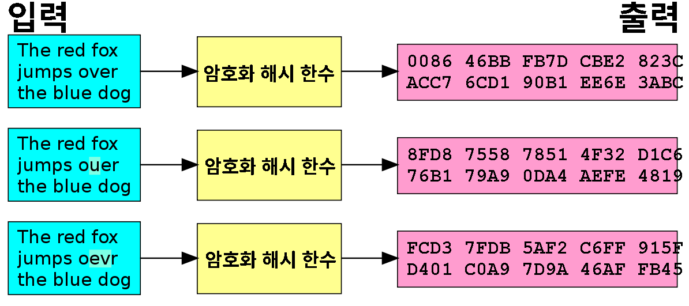

암호화 해시 함수
암호화 해시 함수
의 특징:

역상 저항성
: 주어진 해시 값에 대해, 그 해시 값을 생성하는 입력값을 찾는 것이 계산상 어렵다.
일방향함수다.
제 2 역상 저항성
: 입력 값에 대해, 그 입력의 해시 값을 바꾸지 않으면서 입력을 변경하는 것이 계산상 어렵다.
충돌 저항성
: 같은 해시 값을 생성하는 두 개의 입력값을 찾는 것이 계산상 어려워야 한다.